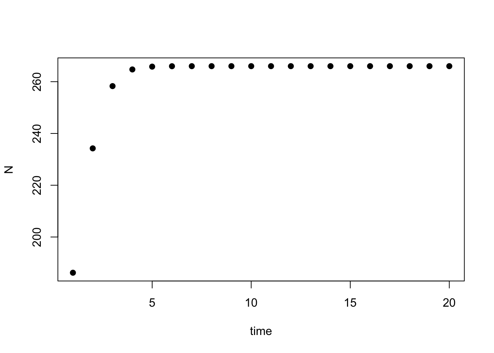
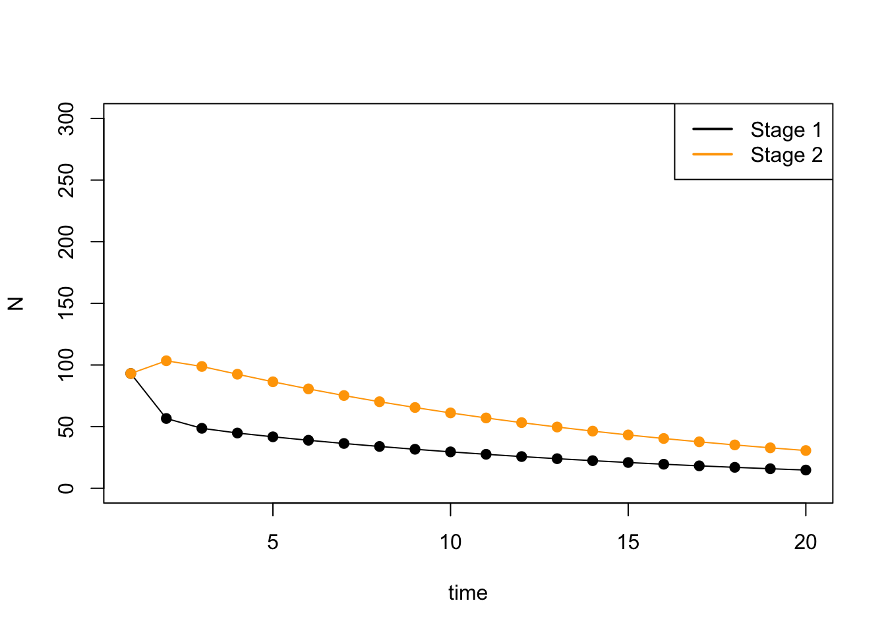
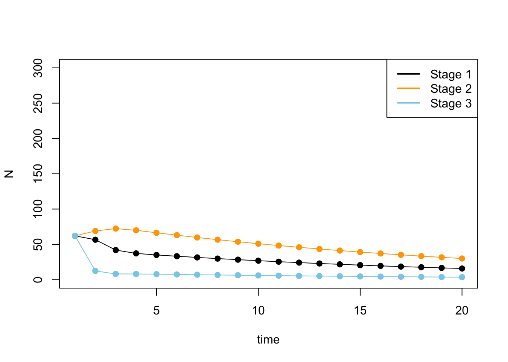
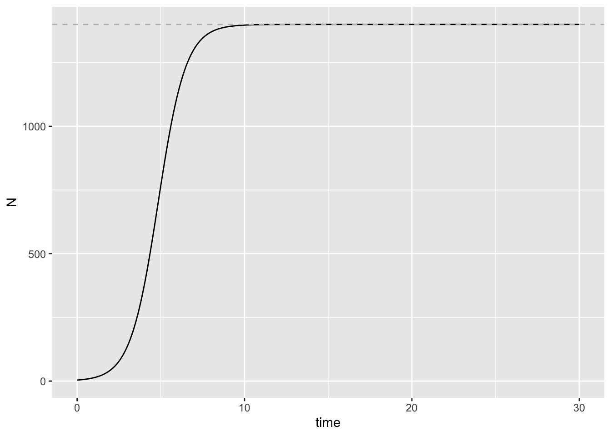
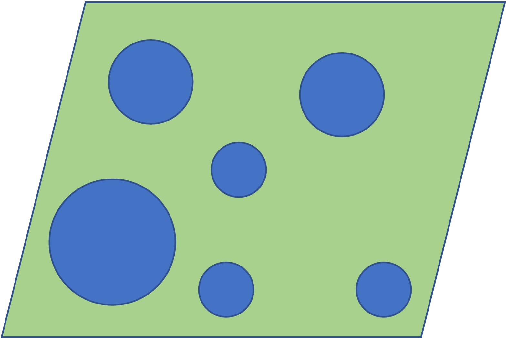
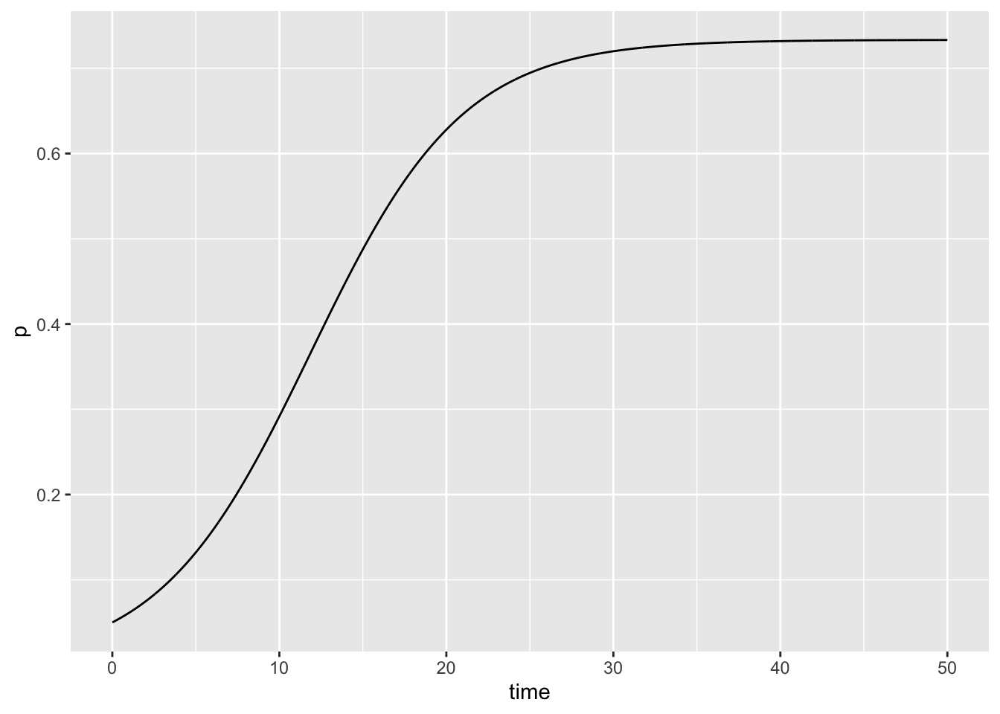
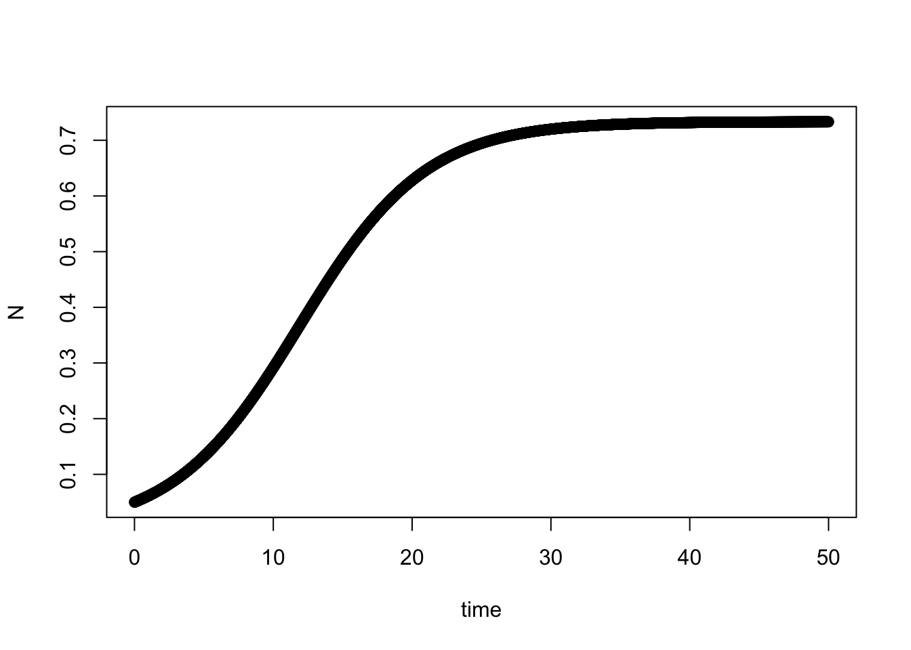
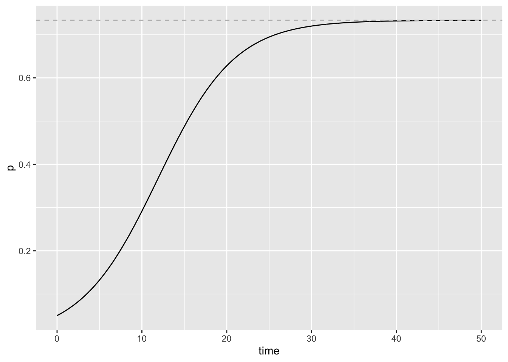
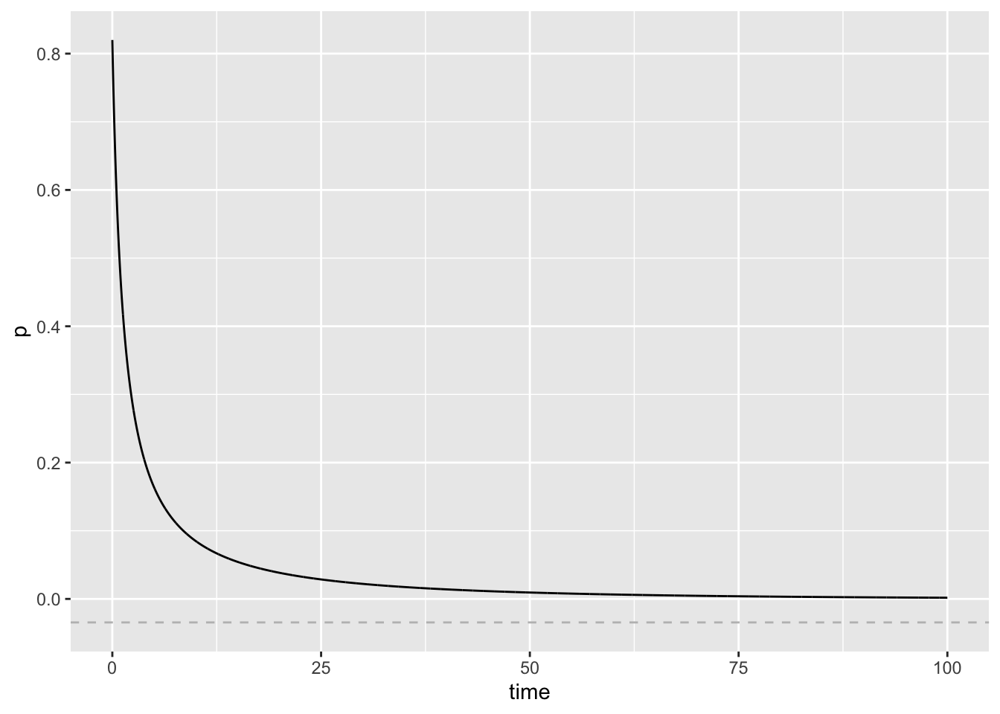
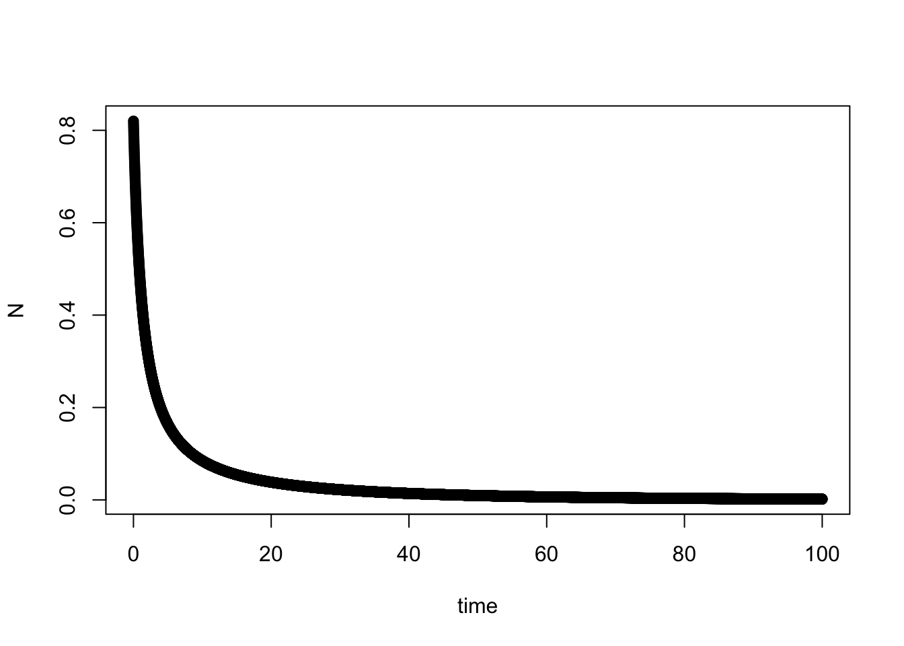

Exercise 3.1 - Models and data in ecology case studies
Jelena H. Pantel
2023-11-23 17:00:23
Notes
This exercise is a companion to the paper Lahaye et al. 1994, which we will read for class next week (Wednesday November 22). You will need to refer to some parts of the paper to complete this exercise.
Instructions
Create either an R script (.R file) or R Markdown document (.Rmd) to save all of your work for today.
Exercise 1. Stage structured population dynamics
In Lahaye et al. 1994, what is the estimated carrying capacity of the San Bernadino (SBM) and San Jacinto (SJM) mountain spotted owl population? (hint: see Figure 1)
The researchers estimated a population growth rate r = 0.86 for the SBM population. The researchers also used an initial abundance for their simulations of 70% of carrying capacity - given this, what is the \(N_0\) (this is one common way to write “initial population size”, pronounced “N nought”, which is British English for “zero” and has the same pronunciation as “N not”) of the SBM population?
Use this r value and the K values given in Figure 1 to develop a simulation of population dynamics for SBM spotted owls. Use your \(N_0\) value above as the first \(N_t\) value. Plot the results of population size (N) over time. Hint: Use the example code in Lecture 2.2 Lecture Notes 2.2 notes. ** Hint: Here is what my plot looks like Hint: Use formula 3.5a from Otto & Day Chapter 3. (You can run the simulation for 20 time steps)
# Step 1. Parameters
r <- 0.86
K <- 266
Nt <- 0.7 * K
# Step 2. Equation function
discrete_logistic <- function(r, K, Nt) {
Nt1 <- Nt + r * Nt * (1 - Nt/K)
return(Nt1)
}
# Step 3. Make sure the function works
Nt1 <- discrete_logistic(r, K, Nt)
# Step 4. Create a new variable to hold future values of N
N <- rep(NA, 20)
# Step 5. Create a for loop to iteratively calculate N
N[1] <- Nt
for (i in 2:20) {
N[i] <- discrete_logistic(r, K, Nt)
Nt <- N[i]
}
- The researchers estimated population growth rate R using data collected from the SBM population, fit to a two-stage Leslie matrix model. This is a model for stage-structured populations, as is the case for the spotted owl. We begin from the discrete-time model for exponential population growth:
\[N_{t+1} = RN_t\]
Where N is abundance and R is the population growth rate. The matrix population growth equation looks similar:
\[\boldsymbol{N_{t+1}} = \boldsymbol{A}\boldsymbol{N_t}\] Where N is a vector of abundances (the abundances for all stages), and A is the transition matrix:
\[\begin{bmatrix} N_1\\ N_2 \\ \end{bmatrix}_{t+1} = \begin{bmatrix}F_1 & F_2\\ P_{1 \to 2} & P_{2 \to 2}\\ \end{bmatrix} \cdot \begin{bmatrix}N_1\\ N_2\\ \end{bmatrix}_t\]
Where, \(F_1\) and \(F_2\) are the fecundities of stage 1 and stage 2 (per-capita production of offspring by stage 1 and 2 individuals) and \(P_{1 \to 2}\) and \(P_{2 \to 2}\) are the survivorship - Stage 1 can survice by transitioning to Stage 2, and \(P_{1 \to 2}\) is the probability of this transition. Stage 2 can survive by staying in the same stage, and \(P_{2 \to 2}\) is the probability of this happening.
Let’s use R to simulate the population growth of the SBM population.
# Step 1. Build the transition matrix A
P.12 <- 0.344
P.22 <- 0.767
F1 <- 0.304
F2 <- 0.304
Nt <- 0.7 * K
A <- matrix(c(F1, F2, P.12, P.22), nrow = 2, ncol = 2, byrow = T)
A## [,1] [,2]
## [1,] 0.304 0.304
## [2,] 0.344 0.767# Step 2. Build the matrix Nt (initial abundance matrix)
Nt <- c((Nt/2), (Nt/2))
# Step 3. Matrix multiplication for Nt+1
Year1 <- A %*% Nt # matrix multiplication!
Year1## [,1]
## [1,] 56.6048
## [2,] 103.4341# Step 4. Create a new variable to hold future values of N
N <- array(NA, dim = c(20, 2))
# Step 5. Create a for loop to iteratively calculate N
N[1, ] <- Nt
for (i in 2:20) {
N[i, ] <- A %*% N[i - 1, ]
}# Step 6. Plot N over time
plot(N[, 1], xlab = "time", ylab = "N", col = "black", ylim = c(0,
300), type = "l")
points(N[, 1], xlab = "time", ylab = "N", pch = 19, col = "black")
lines(N[, 2], col = "orange")
points(N[, 2], xlab = "time", ylab = "N", pch = 19, col = "orange")
legend("topright", col = c("black", "orange"), lwd = c(2, 2),
legend = c("Stage 1", "Stage 2"))
Your turn: Add a hypothetical 3rd stage to the model, with:
\[\begin{bmatrix} N_1\\ N_2 \\ N_3 \\ \end{bmatrix}_{t+1} = \begin{bmatrix}F_1 & F_2 & F_3\\ P_{1 \to 2} & P_{2 \to 2} & P_{3 \to 2}\\ P_{1 \to 3} & P_{2 \to 3} & P_{3 \to 3}\\ \end{bmatrix} \cdot \begin{bmatrix}N_1\\ N_2\\ N_3\\ \end{bmatrix}_t\] In this model, continue to use the same values as above for \(F_1\), \(F_2\), \(P_{1 \to 2}\), and \(P_{2 \to 2}\). Set \(P_{3 \to 2}\) = 0 (because the owls can’t go back a stage) and \(P_{1 \to 3}\) = 0 (because the owls can’t skip a stage). Set \(P_{2 \to 3}\) = 0.1, \(P_{3 \to 3}\) = 0.1, and \(F_3\) = 0.304.
# Step 1. Build the transition matrix A
P.12 <- 0.344
P.22 <- 0.767
F1 <- 0.304
F2 <- 0.304
Nt <- 0.7 * K
P.32 <- 0
P.13 <- 0
P.23 <- 0.1
P.33 <- 0.1
F3 <- 0.304
A <- matrix(c(F1, F2, F3, P.12, P.22, P.32, P.13, P.23, P.33),
nrow = 3, ncol = 3, byrow = T)
# A
# Step 2. Build the matrix Nt (initial abundance matrix)
Nt <- c((Nt/3), (Nt/3), (Nt/3))
# Step 3. Matrix multiplication for Nt+1
Year1 <- A %*% Nt # matrix multiplication!
# Year1
# Step 4. Create a new variable to hold future values of N
N <- array(NA, dim = c(20, 3))
# Step 5. Create a for loop to iteratively calculate N
N[1, ] <- Nt
for (i in 2:20) {
N[i, ] <- A %*% N[i - 1, ]
}# Step 6. Plot N over time
plot(N[, 1], xlab = "time", ylab = "N", col = "black", ylim = c(0,
300), type = "l")
points(N[, 1], xlab = "time", ylab = "N", pch = 19, col = "black")
lines(N[, 2], col = "orange")
points(N[, 2], xlab = "time", ylab = "N", pch = 19, col = "orange")
lines(N[, 3], col = "skyblue")
points(N[, 3], xlab = "time", ylab = "N", pch = 19, col = "skyblue")
legend("topright", col = c("black", "orange", "skyblue"), lwd = c(2,
2, 2), legend = c("Stage 1", "Stage 2", "Stage 3")) ## Exercise 2. Metapopulation dynamics
- Metapopulation simulation
I have had you work with models and associated simulation code for discrete and continuous time models. I paste below code for simulations of continuous-time logistic population growth.
\[ \frac{dn}{dt} = rn(1-\frac{n}{K})\]
# Parameter values to use for simulation
parameters <- c(r = 1.21, K = 1400)
state <- c(N = 4)
times <- seq(0, 30, by = 0.01)
# model function
cont_log <- function(t, state, parameters) {
with(as.list(c(state, parameters)), {
dN <- r * N * (1 - N/K)
return(list(dN))
})
}
# Simulation of model for t time steps
out <- deSolve::ode(y = state, times = times, func = cont_log,
parms = parameters)
# Plot simulation: ggplot
out.g <- as.data.frame(out)
K <- 1400
ggplot2::ggplot(out.g, aes(time, N)) + geom_line() + geom_hline(yintercept = K,
linetype = "dashed", color = "gray")
# Plot simulation: base R
plot(out.g$time, out.g$N, xlab = "time", ylab = "N", pch = 19,
col = "black")
abline(h = K, col = "grey", lty = "dashed")
Please adapt / modify this code to create a simulation of the Levins metapopulation model, which is used to model the proportion of sites occupied over time in a patchy landscape 
\[ \frac{dp}{dt} = cp(1-p) - ep\] Where \(c = 0.3\), \(e = 0.08\), and \(p_0 = 0.05\).
# Parameter values to use for simulation
parameters <- c(c = 0.3, e = 0.08)
state <- c(p = 0.05)
times <- seq(0, 50, by = 0.01)
# model function
cont_meta <- function(t, state, parameters) {
with(as.list(c(state, parameters)), {
dp <- c * p * (1 - p) - e * p
return(list(dp))
})
}
# Simulation of model for t time steps
out <- deSolve::ode(y = state, times = times, func = cont_meta,
parms = parameters)
# Plot simulation: ggplot
out.g <- as.data.frame(out)
ggplot2::ggplot(out.g, aes(time, p)) + geom_line()
# Plot simulation: base R
plot(out.g$time, out.g$p, xlab = "time", ylab = "N", pch = 19,
col = "black")
# Parameter values to use for simulation
parameters <- c(c = 0.3, e = 0.08)
state <- c(p = 0.05)
times <- seq(0, 50, by = 0.01)
# model function
cont_meta <- function(t, state, parameters) {
with(as.list(c(state, parameters)), {
dp <- c * p * (1 - p) - e * p
return(list(dp))
})
}
# Simulation of model for t time steps
out <- deSolve::ode(y = state, times = times, func = cont_meta,
parms = parameters)
# Plot simulation: ggplot
c <- 0.3
e <- 0.08
pstar <- 1 - (e/c)
out.g <- as.data.frame(out)
ggplot2::ggplot(out.g, aes(time, p)) + geom_line() + geom_hline(yintercept = pstar,
linetype = "dashed", color = "gray")
# Plot simulation: base R
plot(out.g$time, out.g$p, xlab = "time", ylab = "N", pch = 19,
col = "black")
abline(h = pstar, col = "grey", lty = "dashed")We saw in class that the equilibrium solution of the metapopulation model (when the system no longer changes) was \(p^* = 1 - e/c\) - please calculate this for the metapopulation simulated above. Use R code to add a straight line to your graph that shows this equilibrium. Hint: For \(ggplot\) I used geom_line, for base R I used abline, and you can see an example of that in my solutions in SE2.2.
Please improve your figure to your best ability. Use RMarkdown to add an informative caption, and explain what the figure is showing.
Please create a new figure showing the eventual extinction of a metapopulation from the following conditions: \(c = 0.87\), \(e = 0.9\), and \(p_0 = 0.82\).
# Parameter values to use for simulation
parameters <- c(c = 0.87, e = 0.9)
state <- c(p = 0.82)
times <- seq(0, 100, by = 0.01)
# model function
cont_meta <- function(t, state, parameters) {
with(as.list(c(state, parameters)), {
dp <- c * p * (1 - p) - e * p
return(list(dp))
})
}
# Simulation of model for t time steps
out <- deSolve::ode(y = state, times = times, func = cont_meta,
parms = parameters)
# Plot simulation: ggplot
c <- 0.87
e <- 0.9
pstar <- 1 - (e/c)
out.g <- as.data.frame(out)
ggplot2::ggplot(out.g, aes(time, p)) + geom_line() + geom_hline(yintercept = pstar,
linetype = "dashed", color = "gray")
# Plot simulation: base R
plot(out.g$time, out.g$p, xlab = "time", ylab = "N", pch = 19,
col = "black")
abline(h = pstar, col = "grey", lty = "dashed")